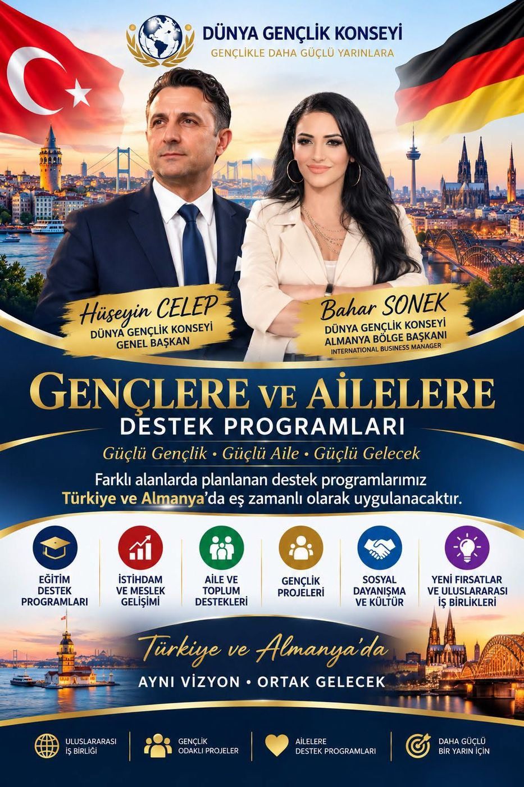
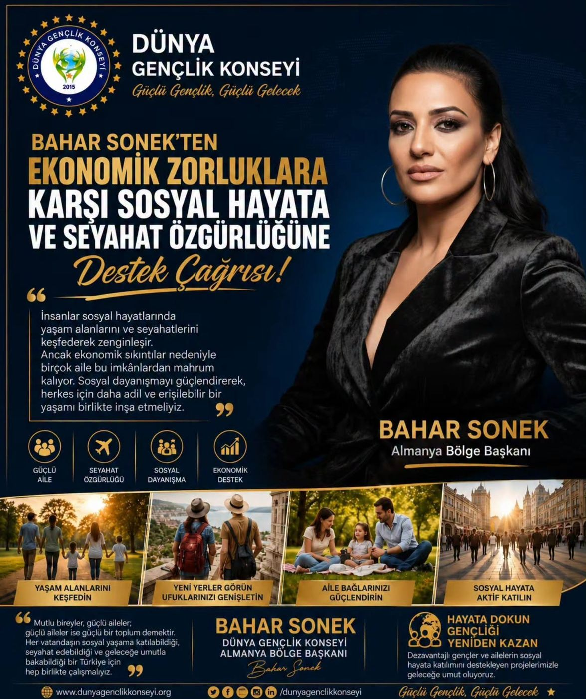
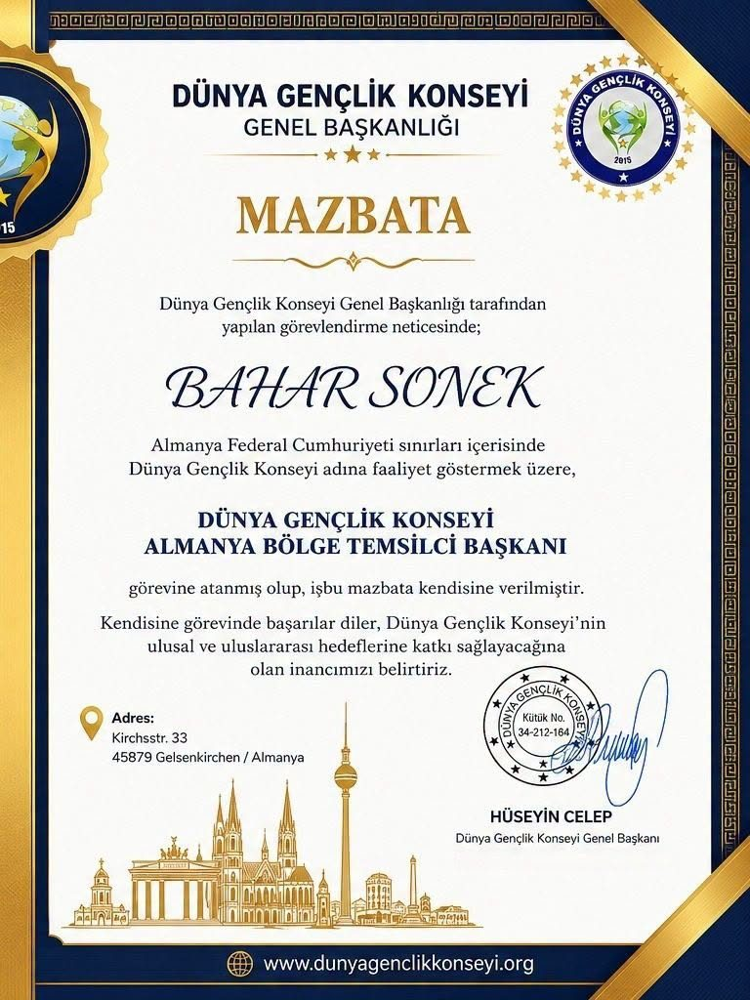
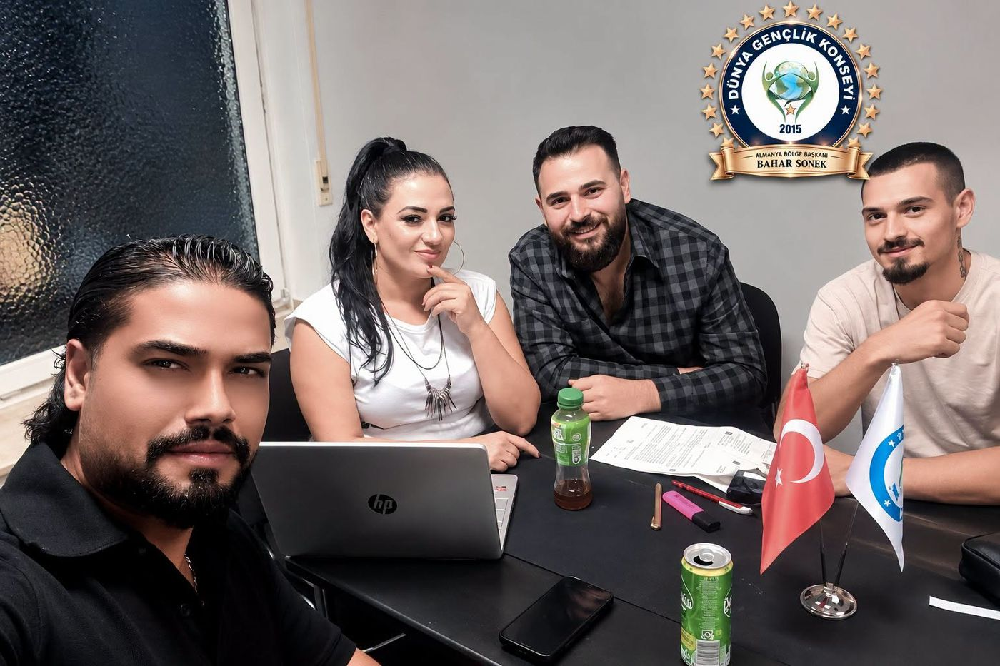

Regionalpräsidentin Deutschland
Bahar Sonek
Ernannt von Generalpräsident Hüseyin Celep, vertritt Bahar Sonek den Weltjugendrat in der Bundesrepublik Deutschland.

Die Kraft der Jugend, die Zukunft der Welt
Der Weltjugendrat (Dünya Gençlik Konseyi, D.G.K.) mit Sitz in Istanbul setzt sich für die soziale, kulturelle, schulische und wirtschaftliche Entwicklung junger Menschen ein. Seine Arbeit reicht von Bildung und Sport über Kultur, Kunst und Technologie bis zu Unternehmertum und sozialen Projekten.
Mit der Ernennung durch Generalpräsident Hüseyin Celep wurde Bahar Sonek beauftragt, im Namen des Rates in der Bundesrepublik Deutschland tätig zu sein – als Regionalpräsidentin Deutschland.
Fünf zentrale Ziele
Jugendsolidarität
Ein starkes Netzwerk, das junge Menschen in Deutschland zusammenbringt.
Bildungsförderung
Orientierung und Unterstützung auf dem Weg durch Schule, Ausbildung und Beruf.
Chancengleichheit
Eine Gesellschaft, in der alle jungen Menschen und Familien gleiche Chancen haben.
Unternehmertum & Innovation
Begleitung für junge Menschen, die ihre Ideen verwirklichen möchten.
Internationale Zusammenarbeit
Projekte und Partnerschaften als Brücke zwischen der Türkei und Deutschland.
gemeinsam wachsen

Förderprogramme für junge Menschen und Familien
Die geplanten Programme werden zeitgleich in der Türkei und in Deutschland umgesetzt – eine Vision, eine gemeinsame Zukunft.
- Bildungsförderprogramme
- Beschäftigung und berufliche Entwicklung
- Unterstützung für Familien und Gesellschaft
- Jugendprojekte
- Soziale Solidarität und Kultur
- Neue Chancen und internationale Kooperationen

Soziale Teilhabe trotz wirtschaftlicher Not
Menschen bereichern ihr Leben, indem sie neue Lebensräume entdecken und reisen. Doch wegen wirtschaftlicher Schwierigkeiten bleiben vielen Familien diese Möglichkeiten verwehrt. Indem wir die soziale Solidarität stärken, müssen wir gemeinsam ein gerechteres und zugänglicheres Leben für alle aufbauen.Bahar Sonek
Mit Projekten, die die soziale Teilhabe benachteiligter junger Menschen und Familien fördern, schenken wir Hoffnung: Das Leben berühren, die Jugend zurückgewinnen.
Glückliche Menschen bedeuten starke Familien – und starke Familien eine starke Gesellschaft. Gemeinsam müssen wir für eine Zukunft arbeiten, in der alle am sozialen Leben teilhaben, reisen und mit Hoffnung nach vorne blicken können.Bahar Sonek · Regionalpräsidentin D.G.K. Deutschland
Gemeinsam sind wir stark
Zum Vergrößern auf die Bilder klicken.




Mit jungen Menschen, für junge Menschen.
Sie möchten sich ehrenamtlich engagieren, unterstützen oder kooperieren? Schreiben Sie uns.